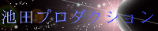

クイックス
キーボードを押しても自機が動いてくれないときは画面内をマウスでクリックしてください。
フォーカスが移り、自機が操作できるようになります。
自機は最初一番左上にいます。矢印キーで 自機の操作。
CTRL押しながら切り出せます。 囲んだ陣地は自領域に・・・
敵を自領域に囲い込むと殺せます。 ただし、敵に自分、もしくは切り取り中の緑線が触れても死亡します。
全体の75%以上 自領域として囲い込むことでクリアーとなります。
キーボードの[R]を押すとゲームを再起動します。
presented by
